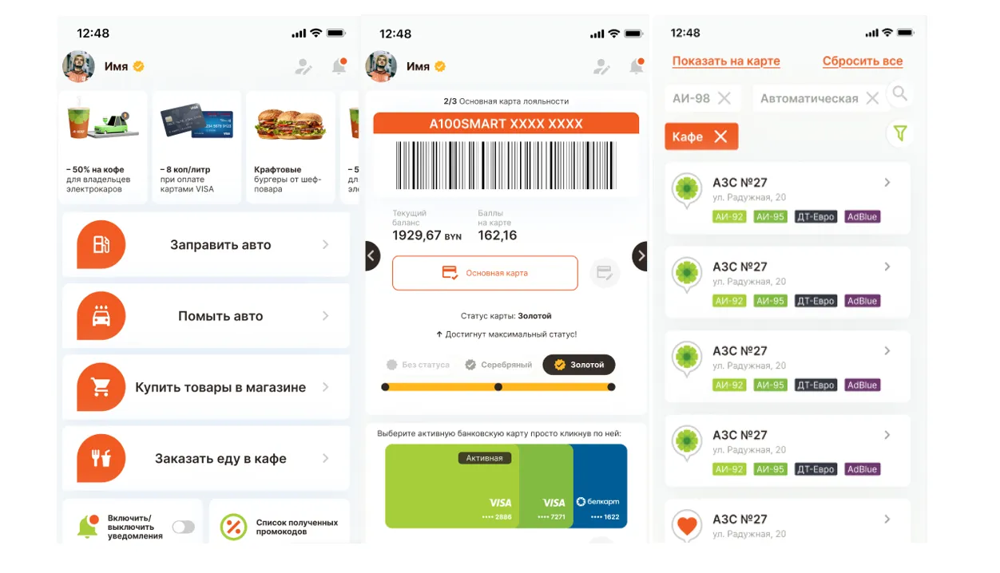

По этому фильтру пока нет кейсов. Выберите другую категорию или отрасль.
Расскажите, что хотите улучшить в бизнесе
Разберём вашу задачу, предложим подходящее решение и определим следующие шаги.
Мы используем cookie
Они помогают сайту работать стабильнее, а нам — понимать, что вам полезно.
Подробнее
Кейс · ЕРИП
Внедрение контакт-центра на базе IP-Asterisk
Услугами платежной системой в ЕРИП пользуются миллионы физических и сотни тысячи юридических лиц. По всем вопросам клиенты обращаются в Контакт-центр компании за помощью. Чтобы упростить работу с запросами клиентов, фиксировать все обращения и снизить нагрузку на специалистов службы поддержки, руководство компании решило преобразовать работу Контакт-центра с помощью Битрикс24.
Проект включал
Проведение бизнес-анализа
Написание технического задания
Развертывание серверной архитектуры под Битрикс24
Настройка Битрикс24
Интеграция с системой бронирования
Внедрение IP-телефонии
Обучение сотрудников
4
месяца — длительность проекта
4
специалиста в команде
1 менеджер проекта
1 бизнес-аналитик
1 специалист по настройке Битрикс24
1 backend-разработчик
40%
рост регистрации и обработки обращений по e-mail
165
нормо-часов в месяц высвободилось у специалистов при работе с e-mail
Процесс работы
Интерфейс модуля распределения и обработки обращений. Для сокращения времени на адаптацию сотрудников, модуль разработали максимально похожим на тот, который специалисты использовали ранее, с привычными для них кнопками и названиями полей.
Внедрение IP-телефонии и контроль нагрузки на сотрудников. С помощью интеграции с телефонной станцией все звонки фиксируются в Битрикс24. Прослушать звонок можно легко из карточки клиента. С входящим оператору Контакт-центра “поднимается” карточка звонка. Если информация об этом клиенте уже есть в системе, она отображается на экране. Также из карточки можно получить данные о предыдущих обращениях. А значит специалист понимает, с кем он общается, какие вопросы клиент задавал ранее, и может легко сформировать отчет по всем звонкам.
Для сопровождаемых Контакт-центром систем выделили отдельные номера телефона и адреса электронной почты.
На этапе прослушивания приветствия у клиента есть возможность выбрать проект, по которому ему необходима консультация.
Так, при звонке в Контакт-центр ЕРИП, клиент может выбрать необходимую цифру исходя из тематики обращения:
консультирование, оплата, подключение к платежной системе в ЕРИП;
МСИ (межбанковская система идентификации).
На основании выбора клиента он направляется на соответствующую очередь – группу специалистов Контакт-центра, которые могут ему помочь).
Оператору Контакт-центра “поднимается” вся история взаимодействия с клиентом и карточка регистрации обращения по тому проекту, который выбрал клиент.
В режиме реального времени менеджеры и специалисты могут видеть:
Интеграция с е-mail. Канал “электронная почта” представляет собой три почтовых ящика со своей логикой обработки сообщений в каждом. Система отображает на какие ящики сколько писем поступило и какое количество ожидают ответа.
При ответе на обращение исходное письмо заявителя всегда перед глазами. Есть возможность использовать шаблоны писем и отправлять письмо на согласование менеджеру Контакт-центра. Менеджер может согласовать письмо и оно автоматически отправится клиенту либо отправить на доработку. Отправленное письмо сохраняется в CRM (Лид, Контакт, Компания).
Для E-mail рассылки в модуле предусмотрена сегментация клиентской базы на основе дерева услуг платежной системы в ЕРИП.
Подключение соцсетей. Чтобы специалисты Контакт-центра не тратили время на отслеживание сообщений клиентов в соцсетях, все обращения из ВКонтакте, Facebook интегрированы в модуль и попадают в CRM во вкладку “Чаты”. При ответе специалист Контакт-центра может использовать шаблоны ответов, которые расположены рядом с диалоговым окном.
Также есть возможность настроить рабочее время и систему автоматических уведомлений. Например, если клиент обращается в компанию в нерабочее время, то он получает автоматический ответ системы: «Вас приветствует Контакт-центр ЕРИП! К сожалению, в данный момент мы не можем вас проконсультировать».
Обработка обращения. Каждой заявке, вне зависимости от канала, можно присвоить категорию и подкатегорию, посмотреть историю взаимодействия с клиентом, ответить на сообщение, делегировать другому специалисту Контакт-центра или сформировать задачу на вторую линию поддержки на основании запроса клиента.
Все обращения сохраняются в CRM (Лид, Контакт, Компания).
В модуле предусмотрена настройка параметров:
Канал связи
Нагрузка на каждый канал и операторов
Очередь операторов
Отображение списка обращений
Есть возможность указывать лимиты распределения одновременных обращений на оператора и на канал коммуникации в целом.
В модуле можно распределять специалистов по каналам коммуникации. Менеджер может изменять настройки и параметры очередей Контакт-центра, видеть статусы всех сотрудников и управлять ими во время работы.
Управлять своим рабочим временем может и специалист Контакт-центра. Разработана гибкая система статусов рабочего времени. В зависимости от установки статуса меняется маршрутизация входящих обращений клиента: доступен, перерыв, консультация, обработка e-mail/чатов.
Бывают производственные ситуации, когда оператору Контакт-центра нужно решить сложный вопрос клиента, провести консультацию с менеджером Контакт-центра. Установка статуса “Консультация” выступает в качестве индикатора запроса консультации менеджера и прекращает распределение звонков, чатов и e-mail на специалиста.
В интерфейсе модуля можно сохранять индивидуальные настройки: списки полей, расположение колонок и сортировки.
База контрагентов. В Беларуси более 22 тыс. компаний, которые оказывают различные услуги и подключены к ЕРИП. В модуль обращений встроено Дерево услуг – справочник всех компаний, чьи услуги доступны для оплаты в ЕРИП. При регистрации обращения клиента специалист Контакт-центра указывает не только тематику запроса, но и услугу конкретной компании по которой возник вопрос.
Для этого у специалиста Контакт-центра в форме регистрации обращений должны быть самые актуальные данные по всем поставщикам услуг и их услугам. Данные в CRM обновляются ежедневно.
Обучение. Особенность погружения в новый софт – непрекращающийся поток обращений от клиентов, на которые нужно отвечать. Часть сотрудников “держала оборону” и принимала заявки, другие находились на обучении, потом происходила замена. Это позволило плавно переключить всех специалистов на работу в новой системе. Основной упор был сделан на обучение менеджеров Контакт-центра, чтобы при необходимости они могли обучить своих сотрудников.
Результаты
Расширился список каналов коммуникации с клиентами.
Все каналы объединяет одна точка входа.
Сотрудники всех подразделений компании видят единый профиль клиента.
Полная информация о категориях вопросов, которые задают клиенты, собирается в одном месте.
Процесс обработки, согласования и отправки электронных писем проходит быстро и бесшовно.
Построена двухуровневая система поддержки клиентов, где в качестве первой линии поддержки выступает Контакт-центр, второй – структурные подразделения компании.
В итоге
Уменьшилась рутинная работа – отпала необходимость вручную сводить и формировать статистику и отчеты. Всё происходит автоматически. Как следствие, снизились ошибки, вызванные “человеческим фактором”.
Увеличилась прозрачность – руководители ЕРИП видят по каким источникам, тематикам, услугам и компаниям приходят обращения от клиентов.
Повысилась эффективность сотрудников – регистрация и обработка обращений по e-mail выросла на 40%, у специалистов высвободилось 165 нормо-часов в месяц. Обработка запросов по другим каналам увеличилась на 20%, у сотрудников высвободилось 85 нормо-часов в месяц.
О заказчике
Небанковская кредитно-финансовая организация ”Единое расчетное и информационное пространство“ – ЕРИП – это три важнейших направления:
Платежная система в ЕРИП – система, которая позволяет совершать оплаты за товары, услуги и платежи в бюджет. В платежной системе в ЕРИП платежи доступны как физическим, так и юридическим лицам. Совершить оплату можно с использованием наличных денежных средств, электронных денег, банковских пластиковых и виртуальных карт. В системе зарегистрировано более 22 тыс. производителей, доступны к оплате более 80 тыс. услуг.
Межбанковская система идентификации (МСИ) – это система, используемая для удаленной идентификации клиентов без их личного присутствия и предоставления им услуг с помощью цифровых каналов обслуживания.
АИС «Расчет-ЖКУ» – это биллинговая система, которая обеспечивает функциональные возможности по учету, расчету и начислению платы за жилищно-коммунальные услуги, распределению и перечислению платы соответствующим поставщикам услуг.
Кейс · Паритетбанк
Комплексная автоматизация b2b-направления
Проект был направлен на создание единой, интеллектуальной цифровой экосистемы для управления B2B-взаимодействием в банке — от первого звонка клиента до закрытия сделки и обслуживания после продажи. Мы объединили телефонию, CRM, логистику обращений и внешние системы в один бесшовный поток, где каждый контакт, звонок, обращение и сделка становятся частью целостного клиентского пути.
Проект включал
аудит и разработку технического задания
установку IP-АТС Asterisk и настройку маршрутизации
установку Битрикс24 Энтерпрайз для Postgre на серверах Заказчика
штатную настройку Битрикс24
установку и настройку модуля IP-телефонии Asterisk Call Center Stats
интеграцию IP-АТС на базе Asterisk c Битрикс24
внедрение модуля обращений Битрикс24
уникальную разработку Модуля обращений и карточки звонка
тестирование
обучение сотрудников Заказчика
разработку пользовательской документации
7
месяцев — длительность проекта
12
специалистов в команде
1 менеджер проекта
3 бизнес-аналитика
1 Teamlead
1 frontend-разработчик
2 backend-разработчика
2 DevOps-инженера
1 интегратор Битрикс24
1 тестировщик
Детализация выполненных работ по проекту
Телефония
Установлена IP-АТС Asterisk на серверах заказчика.
Настроена логика входящей и исходящий маршрутизации для отделов.
Реализованы процедуры постановки внутреннего номера на паузу с указанием причины на аппарате CISCO.
Реализовано хранение и вывод информации по операторам о нахождении в паузе в разрезе различных причин.
Обеспечена возможность оператору поставить звонок на удержание.
Установлен модуль «Asterisk Сall Сenter Stats» для сбора статистики.
Отлажен вывода аналитической информации по параметрам: среднее время разговора и средняя скорость ответа.
Настроена интеграция входящих и исходящих звонков с IP-АТС Asterisk в Битрикс24 для отделов.
Реализован контроль поступления данных в Битрикс24 с информацией по входящим/исходящим звонкам и пропущенным вызовам.
Реализована функция Click to Call из сущностей CRM Битрикс24, что позволило звонить клиенту напрямую из CRM.
Работы по Битрикс24
Разработано общее архитектурное решение всей логики работы b2b-направления в рамках Битрикс24.
Установлена Коробочная версия Битрикс24 Энтерпрайз на сервер заказчика в защищенном контуре на базе MySQL.
Выполнено переконфигурирование базы данных c MySQL на PostgreSQL.
Общие настройки портала
Настроены поля и вкладки карточки Контакта.
Настроен поиск и фильтрация Контактов компании.
Реализована история изменений всех полей Контакта.
В карточке клиента в Битрикс24 настроена возможность увидеть все данные по клиенту из стороннего ПО без сохранения этих данных в CRM. Данное требование обусловлено законодательством о персональных данных: в CRM заказчика персональные данные не хранятся, но при этом у Оператора есть возможность увидеть следующие данные: согласие клиента на обработку персональных данных, персональные данные клиента, адресные данные клиента, данные о работе, данные из системы дистанционного банковского обслуживания, все банковские продукты клиента с возможность поиска, фильтрации и сортировку по различным данным, выписку по текущим продуктам клиента, все лимиты клиента.
Разработка модуля по работе с обращениями клиентов
Разработан модуль обращений на базе Смарт-процессов и настроена привязка входящих звонков к данному модулю.
При входящем звонке настроена возможность поиска по существующим контактам компании как в самом Битрикс24, так и поиска в стороннем ПО. Поиск можно производить по номеру телефона, личному номеру, серии и номеру паспорта, номеру банковской карты.
При входящем звонке реализована привязка звонка к Контакту либо Обращению.
В модуле обращений реализована возможность поиска и фильтрации по источникам, ответственным, категориям обращений.
Реализовано автоматическое создание обращения по следующим источникам: телефон, е-mail, чат, обратный звонок с ivr.
Настроена возможность постановки задачи в смежные отделы банка из Обращения.
Реализована возможность отправки электронного письма клиенту из Обращения с возможностью выбрать шаблон письма, а также возможность отправить информацию Клиенту посредством Viber или СМС прямо из Обращения.
Оптимизация работы операторов
Внедрен функционал по автоматическому поднятию трубки у Оператора Контакт-центра. Оператор не тратит время на ручное действие — звонок начинается мгновенно.
При входящем звонке настроена автоматическую смена статуса с «Доступен» на «Недоступен» для Операторов Контакт-центра.
Оператор Контакт-центра может задавать тематику обращения: Курсы валют, Сопровождение. кредитов, Сопровождение карт, Технические. неполадки, Справочная информация, Мошенники, Международные переводы. Также оператор имеет возможность присвоить статус для обращений: Новое, В работе, Решено, Запрос в SERVICE DESK, Перезвонить, Не дозвонились, Неверный номер, Уже проконсультирован.
Операторам предоставлена возможность заполнять дополнительные поля: дата повторной связи, важные комментарии, файлы, видеть историю обращений и сделок клиента в реальном времени (с фильтрацией и сортировкой), получать уведомление о дне рождения клиента, видеть пометки важных комментариев прямо во время звонка. Оператор не «угадывает» — он знает всё о клиенте до первого слова. Это повышает доверие, снижает количество повторных звонков и улучшает NPS.
Чтобы минимизировать количество «потерянных» обращений и обеспечить равномерную загрузку операторов была разработана единая панель со всеми неразобранными обращениями из всех каналов (звонок, email, чат), реализована возможность вручную взять обращение в работу, настроены автоматические уведомления о новых и изменённых обращениях. В результате - никаких «забытых» запросов. Каждое обращение попадает в обработку — без пропусков и дублирования.
Для того, чтобы устранить возможную дублирование обращений, сократить время на уточнение данных прямо во время звонка Оператор может провести идентификацию клиента по SMS либо другим данным, а также привязать звонок к действующему прошлому обращению, либо создать новое обращение.
Настроен процесс фиксации нарушения срока обработки Обращений с уведомлением ответственным лицам. Сроки больше не «забываются» — система напоминает, контролирует и фиксирует нарушения.
Обеспечение контроля
Чтобы обеспечить прозрачное и гибкое управление распределением нагрузки между операторами руководитель контакт-центра теперь может назначать каждому оператору конкретные линии связи обеспечивая баланс нагрузки, специализацию и минимизацию переключений.
В целях контроля реального времени работы операторов в системе отображается: время обработки каждого обращения (независимо от канала — связи), длительность пребывания оператора в каждом статусе (доступен, обед, постобработка, перерыв и т.д.). Руководитель видит, где теряется время — и принимает обоснованные решения по оптимизации графиков и процессов.
Для упрощения визуального мониторинга статусов команды руководитель может настраивать индивидуальные цвета для каждого статуса оператора — создавая интуитивную, цветовую панель управления.
Ведение сделок
Создан механизм автоматического создания сделки из электронного письма.
На портале Битрикс24 произведена настройка стадийности воронки Сделок и настроены обязательные поля в карточке Сделки.
Реализованы Автоматизации и Бизнес-процессы, например «Напоминание о повторной связи», «Запрос в СД», бизнес-процесс «Смена ответственного на стадии Направлен в отделение» и другие.
Реализован модуль массовой загрузки Сделок, с проверкой согласий клиента и выбором канала коммуникаций с ним.
Интеграции
Выполнена интеграция с платформой для управления согласием на обработку персональных данных «SC-CMP».
Для обеспечения взаимосвязи расчетной системы банка и увеличения эффективности приема платежей настроена синхронизация с автоматизированной системой «КОМПЛАТ».
Настроена интеграция с ПО «WebRetail», в котором хранятся данные по клиенту и подключенным банковским продуктам.
Настроено подключение с ПО «Smsline» для возможности отправки смс-сообщений клиентам прямо из CRM Битрикс24.
Результаты
Благодаря комплексу работ реализован централизованный, безопасный и интеллектуальный клиентский центр, объединивший телефонию, CRM и внешние системы в единую экосистему, где каждый звонок, обращение и сделка становятся частью целостного клиентского пути.
На базе коробочной версии Битрикс24 Энтерпрайз в защищённом контуре с переходом на PostgreSQL создана CRM-платформа, соответствующая законодательству: персональные данные клиента не хранятся в CRM, но доступны в реальном времени из сторонних систем (СДБО, WebRetail, SC-CMP), что дало операторам полный контекст без рисков нарушения законодательства.
Автоматическое создание обращений из всех каналов, привязка звонков к клиентам через поиск по телефону, паспорту и карте, возможность идентификации по SMS и мгновенная привязка к истории сделок — всё это устраняет дублирование, сокращает время обработки и повышает NPS.
Внедрённые бизнес-процессы, автоматические уведомления о сроках, цветовая визуализация статусов и гибкое распределение линий позволили руководителю контакт-центра управлять командой на основе данных, а не догадок. Массовая загрузка сделок, автоматическое создание из писем, интеграция с КОМПЛАТ и Smsline обеспечили бесшовную связь между продажами, обслуживанием и платежами.
В результате —снижение времени обработки обращений, полное соответствие регуляторным требованиям и значительное повышение удовлетворённости клиентов и эффективности команды.
Кейс · Helix
Доработки Битрикс24 для лаборатории Helix
Как оптимизировать отдел по работе с обращениями и претензиями клиентов с помощью Битрикс24
ООО «Международная лаборатория Хеликс» - одна из лидирующих сетей диагностических лабораторий в СНГ, услуги которой пользуются высоким спросом у потребителей. В целях эффективного ведения клиентской базы, компанией было принято решение о внедрении CRM «Битрикс24». По итогам первичного внедрения клиент получил функционал с множественными ошибками, причины которых нам предстояло выявить и устранить.
Решены проблемы с задержками в автоматическом создании Лидов из входящих писем
Исправлена некорректная фильтрация писем и их привязка к Лидам
Решена проблема с обработкой писем из папки «Черновики», предотвращая создание Лидов
Исправлено отображение индикатора добавления писем в CRM для упрощения доступа к связанным сущностям
Решена проблема с автоматическим назначением ответственного в зависимости от типа обращения и получателя письма
Произведено исправление ошибок прав доступа к файловой системе сайта
Доработки портала
Выполнены рекомендации по безопасности
Созданы новые поля для учета даты и времени взаимодействий с клиентами
Доработан процесс автоматического создания Лидов с настройкой передачи информации о почтовом ящике
Изменен механизм передачи данных из системы «Профконтакт», включая создание нового поля для пунктов обслуживания
Осуществлен перенос базы Лидов из одной стадии в другую с конвертацией в Контакт
Добавлены новые поля и источники обращения для улучшения учета взаимодействий
Добавлены исключения в обработку почты для определенных адресов, чтобы предотвратить создание Лидов
Обновлены сертификата безопасности для обеспечения защиты данных
Результаты
Обнаружены и устранены технические проблемы, влияющие на стабильность работы портала
Проведена оптимизация серверной инфраструктуры для улучшения производительности и уменьшения времени отклика
Добавлены новые поля для отслеживания времени и даты контактов с клиентами, что позволяет лучше анализировать взаимодействие и планировать дальнейшие шаги
Автоматизирован процесс создания Лидов на основе поступающей корреспонденции, что сократило время на ручное внесение данных
Заключение
Эти изменения значительно улучшили работу корпоративного портала Битрикс24, повысили его производительность, безопасность и удобство использования.
Кейс · Imkliva Insurance
Настройка системы обработки входящих обращений для страховой компании
Как оптимизировать клиентский сервис и сократить издержки компании
Имклива Иншуранс – страховая компания с большим количество клиентов как в b2c, так и в b2b сегментах. Внушительная клиентская база требует максимальной степени автоматизации процессов, связанных с обработкой поступающих запросов. Необходимость совершенствования качества клиентского сервиса, а также риск увеличения нагрузку на сотрудников и ограничения возможности масштабирования бизнеса стали факторами, из-за которых клиент решил внедрить и настроить CRM-систему в Битрикс24, чтобы создать централизованную систему управления коммуникациями и автоматизировать ключевые бизнес-процессы.
Проект включал
Разработку технического задания
Настройку Битрикс24
Дополнительное программирование функционала ЦРМ
Тестирование
12
месяцев — длительность проекта
7
специалистов в команде
1 менеджер проекта
2 бизнес-аналитика
1 интегратор
1 frontend-разработчик
1 backend-разработчик
1 тестировщик
Выполненные задачи
Организация системы обращений в Битрикс24
Была выполнена адаптация и настройка модуля «Система обращений» для Битрикс24, включающая создание единой точки входа для коммуникаций с клиентами, такие как: телефонные звонки, электронная почта, Viber, онлайн-чат на сайте.
Реализована система поддержки клиентов
Настроена организация взаимодействия одноуровневой системы поддержки клиента: Сектор дистанционного обслуживания клиентов, Управление Урегулирования Убытков, Отдел урегулирования убытков по имущественным видам страхования.
Интеграция IP-АТС c ЦРМ Битрикс24
Передача информации о входящем звонке из IP-АТС в Битрикс24.
Передача информации об исходящем звонке из IP-АТС в Битрикс24.
Передача записи разговора звонка из IP-АТС в Битрикс24.
Возможность совершения исходящего звонка напрямую из сущности Битрикс24.
Разработка кастомных отчётов по телефонии.
Настройка автоматизации работы компании
Полностью автоматизированы различные элементы и сущности в ЦРМ: Контакты, Компании, Лиды, Сделки – в части входящих запросов и обзвона, Смарт-процессы – в части Договоров и Выплат.
Синхронизация данных
Настроена синхронизация данных о контактах, договорах и страховых делах из ПО «Certus» Заказчика в Битрикс24.
Аналитика
Настроены аналитические отчеты по Сделкам, настроена сквозная аналитика, разработаны кастомные отчеты по работе Операторов, графикам и взносам оплат.
Результаты
Создана единая точка входа для всех каналов коммуникации: телефон, email, Viber, онлайн-чат
Обеспечена единая система поддержки для всех направлений работы с клиентами
Уменьшено количество ручных операций и ошибок
Повышена скорость обработки заявок и уровень контроля над бизнес-процессами
Улучшено качество клиентского сервиса
Внедрена система прозрачной аналитики
Кейс · А-100
Разработка telegram и PWA приложения для клиентов сети АЗС А-100
Заказчик обратился к нам по причине ограниченной гибкости и сложности в развитии текущего мобильного приложения «Дзякуй А-100». Это ограничивало возможности для быстрого внедрения обновлений, улучшения пользовательского опыта и адаптации под меняющиеся потребности аудитории. Для решения этих задач была выбрана разработка нового приложения в формате Telegram Mini App и PWA — технологий, позволяющих обеспечить высокую доступность, масштабируемость и гибкость. Такой подход направлен на устранение текущих ограничений, повышение автономии в управлении продуктом и улучшение цифрового пути клиента.

Проект включал
сбор требований
подготовку технического задания
разработку дизайна
верстку
программирование
тестирование
6
месяцев на запуск MVP-версии
6
специалистов в команде
1 менеджер проекта
2 UX/UI-дизайнера
1 frontend-разработчик
1 backend-разработчик
1 тестировщик
3
выпуска: проект реализовывался поэтапно
Особенности реализации проекта
Проект реализовывался поэтапно, с разбивкой на выпуски. Каждый выпуск включал следующие стадии: сбор требований, подготовка технического задания, разработка дизайна, вёрстка, программирование и тестирование.
Выпуск 1
В рамках первого выпуска были реализованы основные пользовательские сценарии приложения, включая следующие:
регистрация и авторизация пользователей в Telegram Mini App;
работа с картой лояльности (виртуальная/реальная);
оформление заказов и взаимодействие с бонусной системой;
разработка интерфейсов и страниц приложения;
проведено тестирование и оптимизация работы сервиса.
Выпуск 2
применение скидок, включая списание баллов;
просмотр промокодов (ограничение: только для авторизованных пользователей);
выбор карты лояльности (реализовано);
просмотр истории покупок и аналитики (в разработке);
раздел «Вопрос-ответ»: просмотр FAQ реализован, функционал чата перенесён на последующие выпуски.
Выпуск 3
Выбор мойки;
Выбор программы мойки;
Оплата услуги мойки, в том числе с помощью АppleРay / Samsung pay;
Оформление подписки на кофе;
Просмотр меню кафе;
Аналитика в административной панели;
Выбор и применение сертификатов;
Правки по электронному чеку с возможностью скачивания чека;
Передача TG_ID вместе с номером телефона в программу лояльности.
Интеграции и архитектурные особенности
Система лояльности «PsolixDiscounts» — управление картами лояльности, бонусными баллами, промокодами;
Программный модуль «SmartPayServer» — передача и обработка информации для включения ТРК и онлайн-оплаты топлива;
Система автоматизации АЗС (Berlio) — управление основными процессами обслуживания клиентов на АЗС;
Приложение поддерживает работу с картами-брелоками, виртуальными картами, а также с новыми TG-картами (TGVR).
Продолжается активная работа по расширению функционала приложения в рамках следующих выпусков.
Приложение предназначено для клиентов сети АЗС А-100 и позволяет
сделать онлайн-заказа топлива, еды и товаров;
оформить предзаказ без участия персонала АЗС;
участвовать в программе лояльности «Дзякуй» (начисление и списание бонусных баллов);
получать персональные предложения и акции.
Для бизнеса приложение решает ряд задач
увеличивает проходимость АЗС за счёт снижения нагрузки на операторов;
расширяет базу лояльных клиентов через удобный ввод в программу лояльности;
увеличивает продажи за счёт онлайн-допродаж и персонализированных предложений;
снижает зависимость продаж от персонала АЗС.
Результаты
Была разработана и внедрена новая цифровая платформа для взаимодействия с клиентами — Telegram Mini App и PWA, обеспечивающие высокую гибкость, масштабируемость и быструю адаптацию под потребности аудитории. Новое решение позволило устранить ограничения предыдущего приложения, повысить автономию в управлении продуктом и улучшить цифровой опыт пользователя.
Сайт · Розы.Бел
Разработка интернет-магазина по доставке цветов
Компания Итач-софт успешно разработала интернет-магазин для компании, специализирующейся на доставке цветов. Проект был выполнен на платформе Opencart с уникальным дизайном и интеграцией с различными системами для улучшения удобства работы и автоматизации бизнес-процессов.
Задача нашей команды включала в себя редизайн и разработку полностью нового интернет-магазина сайта для сети цветочных магазинов в Минске
Результаты
Удобство для пользователей
Покупатели получили современный и удобный интернет-магазин с возможностью оплаты удобным способом и оперативной доставкой.
Автоматизация бизнес-процессов
Интеграция с CRM Битрикс24 позволила автоматизировать работу с заказами и клиентами, что значительно сократило время обработки и повысило точность данных.
Рост продаж
Благодаря улучшенной функциональности и удобству использования, увеличилось количество онлайн-заказов, что привело к росту выручки.
Повышение лояльности клиентов
Новый дизайн и удобство навигации положительно сказались на пользовательском опыте, что привлекло новых клиентов и повысило лояльность существующих.
Проект по разработке интернет-магазина для сети цветочных магазинов в Минске на базе CMS OpenCart с уникальным дизайном и интеграцией с CRM Битрикс24 был успешно реализован. Он обеспечил удобство для покупателей и автоматизацию бизнес-процессов для компании, что привело к улучшению показателей продаж и общей эффективности бизнеса.
Сайт · Divan Boss
Разработка интернет-магазина мебели
DivanBoss — крупный интернет-магазин мебели, для которого была выполнена разработка современного e-commerce-решения с уникальным дизайном, широким набором интеграций и удобным пользовательским сценарием оформления заказа. Проект был реализован на CMS Битрикс, что позволило обеспечить гибкость в доработках, стабильную работу интернет-магазина, удобное администрирование контента и возможность дальнейшего масштабирования проекта под задачи бизнеса.
проработка структуры каталога и логики оформления заказа;
постановка задач для дизайнеров и разработчиков.
Дизайн и интерфейсы
разработка уникального дизайна сайта;
проектирование визуальной концепции интернет-магазина;
отрисовка ключевых страниц и пользовательских сценариев;
адаптация дизайна под desktop и mobile-устройства.
Верстка и frontend-разработка
адаптивная верстка страниц сайта;
реализация пользовательских интерфейсов;
подготовка интерактивных элементов каталога, карточек товара, корзины и оформления заказа;
оптимизация пользовательского опыта на разных типах устройств.
Backend-разработка на CMS Битрикс
разработка интернет-магазина на CMS Битрикс;
настройка структуры сайта;
реализация логики каталога и карточек товаров;
настройка корзины и оформления заказа;
внедрение административного функционала;
выполнение кастомных доработок под бизнес-процессы клиента.
Интеграция с 1С
интеграция интернет-магазина с 1С;
настройка обмена заказами;
настройка обмена ценами;
обеспечение актуальности данных между сайтом и учетной системой.
Подключение платежных систем
реализация оплаты банковскими картами;
подключение Яндекс Сплит;
интеграция систем рассрочки;
настройка сценариев онлайн-оплаты в процессе оформления заказа.
Интеграции с маркетинговыми платформами
интеграция с Mindbox;
интеграция с AdvCake;
подготовка сайта к использованию маркетинговых и performance-инструментов.
Дополнительные сервисы и пользовательские улучшения
автоматическое определение города по IP;
интеграция с DaData;
улучшение сценариев заполнения данных пользователями;
персонализация пользовательского опыта в зависимости от региона.
Запуск проекта
проведение комплексного тестирования;
исправление замечаний по итогам проверки;
подготовка проекта к запуску;
обучение сотрудников заказчика.
Результаты
Проект divanboss.ru стал полноценным инструментом онлайн-продаж, который помогает компании эффективно работать с ассортиментом, автоматизировать бизнес-процессы, подключать маркетинговые механики и повышать удобство для конечного покупателя.
Решение позволяет
представлять широкий ассортимент товаров в структурированном каталоге;
демонстрировать товары в удобных карточках;
оформлять заказы онлайн;
принимать оплату разными способами;
использовать рассрочку и сплит-оплату;
автоматически адаптировать пользовательский опыт под регион клиента;
передавать заказы и данные по ценам в учетные системы;
подключать маркетинговые инструменты для роста продаж и возврата клиентов.
Сайт · БГМУ
Разработка корпоративного сайта БГМУ
Команда разработчиков Итач-софт с гордостью представляет результаты совместной работы с Белорусским государственным медицинским университетом. Наш опыт и профессионализм позволили создать веб-пространство, соответствующее самым высоким стандартам качества и современным требованиям.
Задача нашей команды включала в себя редизайн и разработку полностью нового корпоративного сайта для Белорусского Государственного Медицинского Университета.
Выполненные задачи
Анализ и планирование
Проведен детальный анализ старого сайта БГМУ для выявления его слабых мест и потребностей целевой аудитории.
На основе анализа сформулированы ключевые задачи и требования для нового сайта.
Разработка нового уникального дизайна
Создан современный и привлекательный дизайн, отражающий корпоративный стиль и ценности БГМУ.
Разработано более 50 макетов страниц, включая главную страницу, страницы факультетов, новостные разделы, страницы с информацией для абитуриентов и студентов и другие.
Дизайн адаптирован под различные устройства для обеспечения удобства пользователей на всех платформах (адаптивный дизайн).
Разработка версии для слабовидящих
Создана специальная версия сайта для слабовидящих, включающая возможность изменения размера шрифта, контраста и других параметров для улучшения доступности контента.
Разработка многоязычной версии сайта
Разработаны и внедрены три языковые версии сайта: русская, белорусская и английская.
Обеспечен легкий переключатель между языковыми версиями для удобства пользователей.
Перенос контента со старого сайта
Перенесен весь контент со старого сайта, включающий более 5000 страниц.
Контент был структурирован и оптимизирован для нового дизайна и функционала сайта.
Обеспечено сохранение всех ссылок и правильная индексация контента в поисковых системах.
Разработка на CMS Битрикс
Сайт разработан на платформе CMS Битрикс, обеспечивающей высокую производительность, безопасность и удобство управления контентом.
Внедрены необходимые модули и компоненты для реализации всех функций сайта.
Тестирование и запуск
Проведено комплексное тестирование всех функций сайта на различных устройствах и браузерах.
Исправлены выявленные ошибки и оптимизированы процессы.
Запуск сайта в рабочий режим и мониторинг его работы в первые недели.
Обучение и поддержка
Обучение персонала университета работе с новой CMS и управлению контентом.
Обеспечение технической поддержки на этапе внедрения и последующей эксплуатации.
Написание документации по тому, как пользоваться административной панелью сайта.
Результат
Современный и удобный сайт
Новый дизайн и структура сайта улучшили восприятие и удобство использования для всех категорий пользователей.
Доступность
Версия для слабовидящих обеспечила доступность информации для людей с ограниченными возможностями.
Многоязычность
Три языковые версии сайта сделали информацию доступной для более широкой аудитории, включая иностранных студентов и партнеров.
Эффективное управление контентом
Использование CMS Битрикс упростило управление сайтом и обновление контента, что позволило оперативно реагировать на изменения и добавлять актуальную информацию.
Сохранение и оптимизация контента
Успешный перенос и оптимизация более 5000 страниц контента сохранили ценную информацию и улучшили её доступность для пользователей.
Заключение
Проект по разработке корпоративного сайта Белорусского государственного медицинского университета был успешно реализован. В результате университет получил современный, функциональный и удобный сайт, который удовлетворяет потребности различных категорий пользователей, обеспечивает высокую доступность информации и простоту управления контентом.
Сайт · Автолайт Экспресс
Разработка личного кабинета пользователей
Компания Итач-софт успешно разработала личные кабинеты для юридических и физических лиц на сайте autolight.by. Основные задачи проекта включали создание уникального дизайна, использование современных технологий Битрикс и Vue.js, а также интеграцию с 1С.
Цель проекта: разработка удобного и интуитивно понятного личного кабинета для физических и юридических лиц, который позволит пользователям быстро и легко оформлять заказы, а также отслеживать всю необходимую информацию по заказам.
Выполненные работы
Уникальный дизайн
Разработан эксклюзивный дизайн, обеспечивающий удобство и привлекательность для пользователей.
Дизайн адаптирован для корректного отображения и удобного использования на всех устройствах, включая компьютеры, планшеты и смартфоны.
Технологии
Использованы передовые технологии Битрикс и Vue.js для создания быстрого и функционального интерфейса.
Внедрение системы управления контентом (CMS), позволяющей администраторам легко обновлять информацию и управлять материалами.
Интеграция с 1С
Проведена полная интеграция с системой 1С для синхронизации данных.
Режим реального времени: Обмен данными с 1С происходит в режиме реального времени.
Двусторонний обмен: Обеспечен двусторонний обмен данными для актуализации информации и улучшения взаимодействия.
Регистрация и авторизация
Реализована регистрация пользователей с помощью СМС-сервиса для обеспечения безопасности и удобства.
Личный кабинет и обработка заказов
Сложная логика обработки заказов: В зависимости от типа доставки, габаритов, города отправления и доставки пользователям предоставляются различные варианты доставки с разной стоимостью.
Выбор времени доставки: Пользователи могут выбрать удобное время доставки.
Отслеживание заказа: В личном кабинете пользователи могут видеть статус своего заказа в режиме реального времени и отслеживать посылку по трек-номеру.
Нагрузочное тестирование
Проведено нагрузочное тестирование для обеспечения стабильности и производительности сайта при высоких нагрузках.
Сайт успешно обрабатывает тысячи заказов ежедневно, обеспечивая надежную работу даже при пиковых нагрузках.
Результат
Повышение удобства
Личные кабинеты обеспечили удобный доступ к персонализированной информации и услугам для юридических и физических лиц.
Улучшение функциональности
Современные технологии позволили создать быстрый и отзывчивый интерфейс, улучшив пользовательский опыт.
Эффективность управления
Интеграция с 1С повысила точность данных и упростила процессы управления.
Надежность и стабильность
Нагрузочное тестирование подтвердило способность сайта обрабатывать большой объем заказов, обеспечивая стабильную работу.
Оптимизация доставки
Сложная логика обработки заказов и возможность выбора времени доставки улучшили удобство и точность доставки для пользователей.
Мы гордимся нашим вкладом в развитие сайта autolight.by и уверены, что созданные личные кабинеты значительно улучшат взаимодействие пользователей с платформой.
Сайт · Автогрупп
Разработка корпоративного сайта для компании по доставке автомобилей из Америки
Компания Итач-софт успешно разработала корпоративный сайт для компании, специализирующейся на доставке автомобилей из Америки. Проект был выполнен на платформе 1С-Битрикс с уникальным дизайном и внедрением множества полезных функций.
Создание современного, функционального и удобного корпоративного сайта, который бы обеспечивал пользователям возможность отслеживания автомобилей, оплаты услуг и удобного взаимодействия с компанией.
Выполненные задачи
Уникальный дизайн
Разработан эксклюзивный дизайн сайта, который подчеркивает профессионализм и надежность компании. Дизайн адаптирован для удобного использования на всех устройствах, включая компьютеры, планшеты и смартфоны.
Функционал отслеживания авто по VIN-номеру
Внедрен функционал, позволяющий клиентам отслеживать статус доставки автомобилей по VIN-номеру. Это обеспечивает прозрачность процесса и позволяет клиентам всегда быть в курсе текущего состояния своего заказа.
Система оплаты за услуги
Разработана и интегрирована система онлайн-оплаты, позволяющая клиентам удобно и безопасно оплачивать услуги компании. Поддерживаются различные способы оплаты, обеспечивающие максимальный комфорт для пользователей.
Интеграция с amoCRM
Произведена интеграция сайта с amoCRM, что позволяет автоматически передавать данные о клиентах и заказах в CRM-систему. Это улучшает управление клиентскими данными и повышает эффективность работы менеджеров.
Интеграция с Roistat
Сайт был интегрирован с аналитической системой Roistat, что позволяет отслеживать эффективность маркетинговых кампаний и оптимизировать рекламные бюджеты. Внедрение Roistat обеспечивает точную аналитику и контроль над маркетинговыми показателями.
Результат
Повышение удобства для клиентов
Новый сайт с функционалом отслеживания автомобилей и системой онлайн-оплаты значительно упростил взаимодействие клиентов с компанией.
Улучшение управления
Интеграция с amoCRM и Roistat обеспечила лучшее управление клиентскими данными и маркетинговыми кампаниями, что способствовало повышению эффективности работы компании.
Привлечение новых клиентов
Уникальный дизайн и удобный интерфейс сайта привлекли больше новых клиентов, увеличив общий объем заказов.
Мы гордимся нашим вкладом в развитие компании по доставке автомобилей из Америки и уверены, что созданный сайт будет способствовать её дальнейшему росту и успеху.
Отзыв клиента
“
Настоящим письмом выражаем свою искреннюю благодарность компании «Итач-софт» за отличную работу, которую проделала Ваша компания по созданию и запуску нашего сайта, а также по разработке собственной специализированной CRM-системы.
В работе с Вами мы увидели профессионализм, знание технологий, системный подход, соблюдение сроков, способность увидеть и понять наши потребности, и предложить лучшее решение.
Надеемся на дальнейшее плодотворное сотрудничество с Вами!